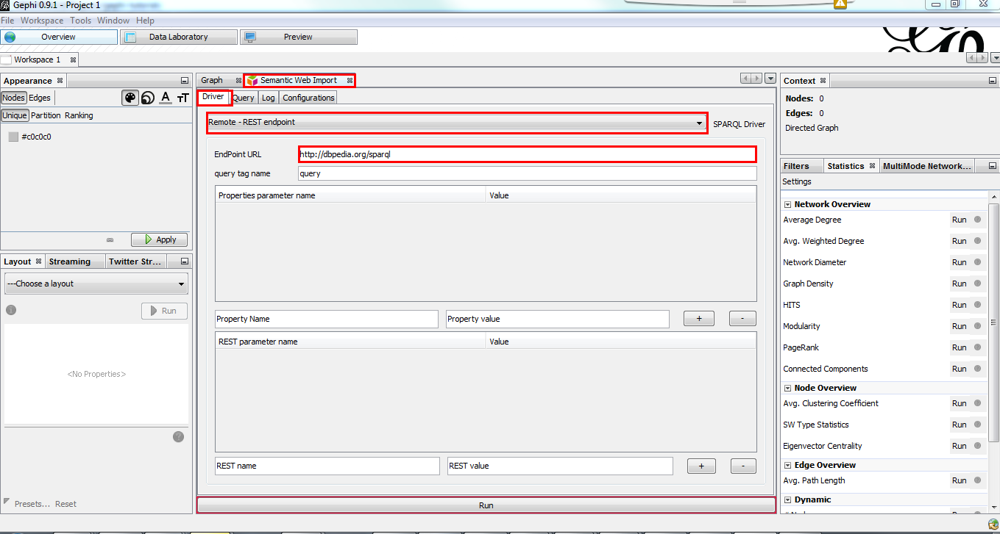
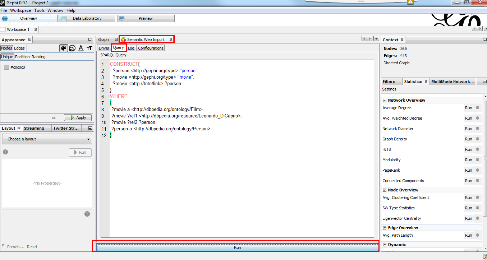
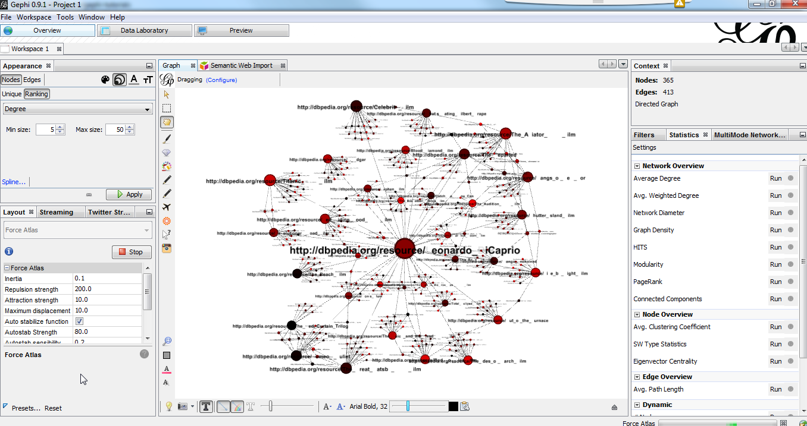

select *
where
{
<http://dbpedia.org/resource/Leonardo_DiCaprio> ?predicate ?object.
}Semantic Web Importer
2017-01-31
last modified: 2023-04-03
== !
Gephi workshops
I organize online workshops and personalized trainings for Gephi, for beginners and experts. To schedule one or to get more information: analysis@exploreyourdata.com.
Author and documentation
The Semantic Web Importer plugin allows you to query a SPARQL endpoint and represent the result as a graph in Gephi.
Official page of the plugin: https://gephi.org/plugins/#/plugin/semantic
Plugin Author: Erwan Demairy
Plugin sources: git://scm.gforge.inria.fr/segviz-public/gephi-plugins.git
Licensed under: Cecill-C
Introduction to concepts
RDF stands for Resource Description Framework . It is a way to represent information of all kinds. It is now a specification and since 1995 people are working on RDF and all subjects related to information representation for automatic system.
RDF can be considered as the « Grand Father » of graph representation.
The idea is very simple, all information can be represented as a triplet :
(subject, predicate, object)
To query such a dataset, a query language has been developed: SPARQL
The SPARQL format is close to SQL format and tries to be as close as possible to a natural language.
DBpedia is the RDF version of Wikipedia. It is an open datastore that tries to gather and offers in RDF format all information that you can find in wikipedia or other knowledge service.
DBPedia is very interesting because it preformats concepts and makes them available for automatic processes or complex queries across concepts.
You can query it through a web interface or via any RDF toolkit :
Quickstart
The result of a SPARQL can be a table as we could do it with SQL, but you can also build a graph based on your query. The Semantic Web Plugin uses this feature to draw the result of your query into Gephi.
First, we need to install Semantic web import. You can find and install this plugin in the menu Tools → Plugins of Gephi.
When installed, go to the Semantic Web Import tab.
In the Driver tab, choose Remote - REST endpoint and put http://dbpedia.org/sparql and EndPoint URL.
Press Enter after typing the URL endpoint so the url is getting validated and used. |

Figure 1. Setup endpoint
Go to Query tab, remove the dummy query and put this one:
CONSTRUCT{
?person <http://gephi.org/type> "person".
?movie <http://gephi.org/type> "movie".
?movie <http://toto/link> ?person .
}
WHERE
{
?movie a <http://dbpedia.org/ontology/Film>.
?movie ?rel1 <http://dbpedia.org/resource/Leonardo_DiCaprio>.
?movie ?rel2 ?person.
?person a <http://dbpedia.org/ontology/Person>.
}Finally, click on Run

Figure 2. SPARQL Query
Go back to the Graph preview and you should see a graph. Use the layout tab to get a more intuitive rendering.

Figure 3. result
Details
CONSTRUCT block
The CONSTRUCT block define the new graph to build from the query. That’s the description of your data the plugin will interpet
to build the graph.
What is the syntax for this CONSTRUCT block :
→ Will create the node ?a with the property nodeProperty equal to ?b.
?a (<what_You_Want> or ?c) ?b
→ will create a link between ?a and ?b with label <what_You_Want>
WHERE block
The WHERE block define the data to match based on the query typed in :
?movie a http://dbpedia.org/ontology/Film.
→ Get all subject which is a http://dbpedia.org/ontology/Film.
The a is actually a SPARQL special word for <rdf:type>.
So it’s exactly equal to ?movie <rdf:type> http://dbpedia.org/ontology/Film
?movie ?rel1 http://dbpedia.org/resource/Leonardo_DiCaprio.
→ Match all subjects which have any predicate where the object is http://dbpedia.org/resource/Leonardo_DiCaprio
?movie ?rel2 ?person.
→ Match any triplet
?person a http://dbpedia.org/ontology/Person.
→ Match the subject ?person if it’s a http://dbpedia.org/ontology/Person.
In other words, match the variable ?movie to any entity that is a Film and that has at least 1 triplet where Leonardo is an object. Match also all ?person that is a Person.
The result in our case is actually a bi-modal graph with Movies and Persons shared with Leonardo Dicaprio.
Tips to go further
What is interesting with this method is the way to query the data, and the fact that it is easily extensible to other subjects just by changing few things in the query. We can think about Music Band and Player relationships, the traditionnal Persons to Companies, or more originally, all the common places where your favorites movies where shot, etc. The limit is your imagination to graph.
On our example, you can run multiple time the same query and change which person you want to « expand », it will automatically create the global network of all your research. It will also maybe give you some insight on which new movies to watch tonight 😉
But keep in mind that you are heavily dependent on Dbpedia data quality (or other RDF entrypoint), which can alterate a lot you research.
If you want more refined queries, you will have to learn SPARQL and RDF in more details. There are a lot of tutorials around the web that will help you to master SPARQL.
to go further
Visit the Gephi group on Facebook to get help,
or visit the website for more tutorials